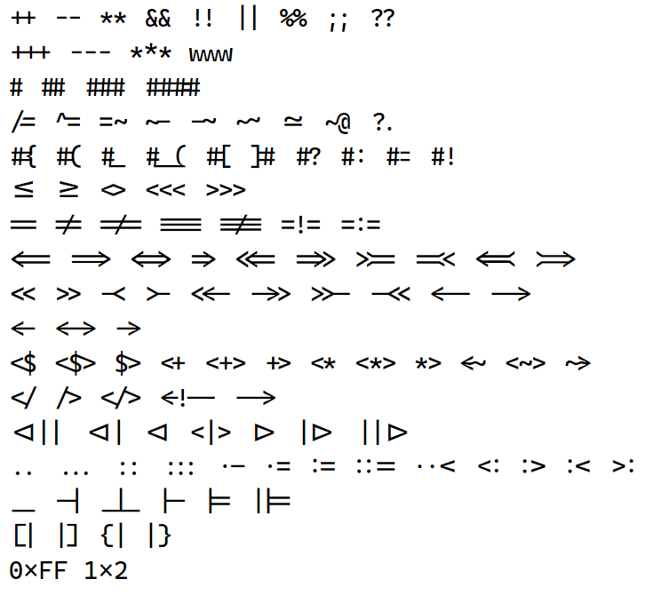

本周阅读材料
教科书
教科书 Operating Systems: Three Easy Pieces:
- Preface 前言
- 第 1 章 - Dialogue on the Book
- 第 2 章 - Introduction to Operating Systems
准备好 Linux 实验环境
以下环境都是可以的 (你可以选择你喜欢的 Linux 发行版；对于新手，我们推荐 Ubuntu LTS，虽然软件包可能不是最新，但相对稳定性稍好，且用户多文档齐全)：
- 物理机直接安装的 Linux
- Windows Subsystem for Linux (应用商店安装 Ubuntu)，通过 ssh 登陆
- VirtualBox 安装的 Linux 虚拟机，通过 ssh 登陆
- 网络上购买的 Linux 虚拟主机，通过 ssh 登陆
无论上述何种方式安装，你都可以获得相当完整的 Linux 体验，但有些时候需要一些额外的配置：
- 确保你拥有 root 权限 (但平时请在普通权限下工作)
- 能够显示图形界面，例如 QEMU。无论你的 Linux 安装在哪里 (本地或远程)，都可以通过在本地安装 X Server (例如 macOS 的 XQuartz、Windows 的 Xming/WSLg) 和 X11 Forwarding 实现图形界面显示
- 网络直播中的 macOS 就通过 XQuartz 显示来自 Windows 10 虚拟机中 WSL 中 X11 application 的图形
- 尽可能完整的 CPU 功能 (例如 KVM)，但缺失部分功能不会对掌握课程必要内容带来影响
终端模拟器
在有了 Linux 之后，你首先需要一个好的、现代的终端模拟器，例如优秀的 Unicode 和 font ligature 支持。你能看出下面是什么字体吗：

我们也为大家提供了一些可能的选择：
- Windows Terminal (强烈推荐！)
- macOS 自带的 Terminal.app (直播时使用)
你可以定制化你的终端，用你喜欢的字体、字号和配色方案。
熟悉基础命令行工具
当你可以登陆进入系统，就可以开始熟悉 Linux 的命令行工具了：
- 查找文档的工具，例如 tldr 和 man
- UNIX 系统管理的基础工具，请 STFW
- 在命令行使用 gcc 编译、运行一个 C 程序，阅读
gcc --help的帮助信息了解 gcc 支持的主要功能 - GNU Make - 本课程使用 GNU Make 构建项目。我们避免了 CMake 这些在实际项目中很常用，但会导致非常冗长 (也难以理解) 流程的工具
- Git - 本课程所有代码都用 Git 管理；虽然严格意义说你不需要知道 Git 是如何工作的，但学会使用它会对你今后的职业生涯很有帮助
用每一个工具都完成一个基本的功能，并在你愿意的时候读一读 Tutorial 和手册 (我们强烈推荐你收藏上面这些工具的官方文档，并且在你空闲的时候读一读)。这一部分请花一些时间 STFW: 找到好的 tutorial 会极大幅地提高你的效率。我们为大家提供了一些参考资料，其中有一些你用得上的线索，例如 The Art of Command Line。
能够使用这些基础工具，你就已经完成了进入《操作系统》课程的准备！
配置属于你自己的环境
课程在课堂上展示了一些命令行工具的使用，包括：
- 现代的 Shell
- 课堂使用的是新手更友好的 fish，而且只有很少的配置；但 fish 的一个缺点是语法和 bash/zsh 有一些差别——你的脚本有时会被 bash 拒绝
- 使用 gdb 调试源代码和汇编代码
- 使用 tmux 实现多窗口管理
- 使用 Vim 除了输入文本之外的应用
- 通过改变格式使不容易阅读的日志变得可以阅读
- 在 Vim 中调用命令行工具 (例如
:%!,:'<,'>!, ...)
上面这些软件都是高度可配置的，因此花一些时间 “玩” 它们是十分值得的。例如你可能观察到，上课演示时 tmux 的选中行为和默认的行为很不一样。这是一个长期的过程——你会不断地在阅读手册和文章的过程中提升你的工作效率！
阅读理解示例代码
Slides 中有包含到源代码的链接——我们在上课时，所有的源代码都是用命令行工具 wget 下载的。在这门课中，阅读、理解代码示例，然后自己做一些小的尝试和修改是至关重要的。我们尽可能地使示例代码具有参考和学习的价值，例子包括：
- logisim.c 中用到的 X-macro，它用到了预编译器反复执行宏展开直到 “收敛” 的特性
- seven-seg.py 实现了一个最小的通用模板引擎，这个技巧在字符串处理 (例如网页生成) 中非常常见；此外我们还用了
exec()动态执行代码，省去了 parse 的过程 - hanoi-nr.c 很好地展示了函数调用和返回的 “形式语义”
- minimal.S 展示了如何发起系统调用，以及如何计算汇编代码中的地址
- ……
当然也欢迎大家指出代码里的问题，以及能写得更好的地方 ;)